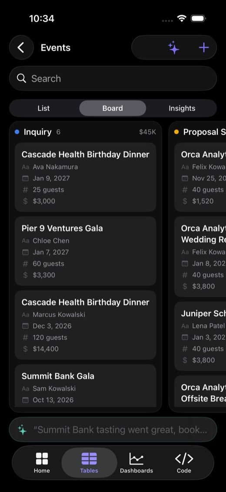
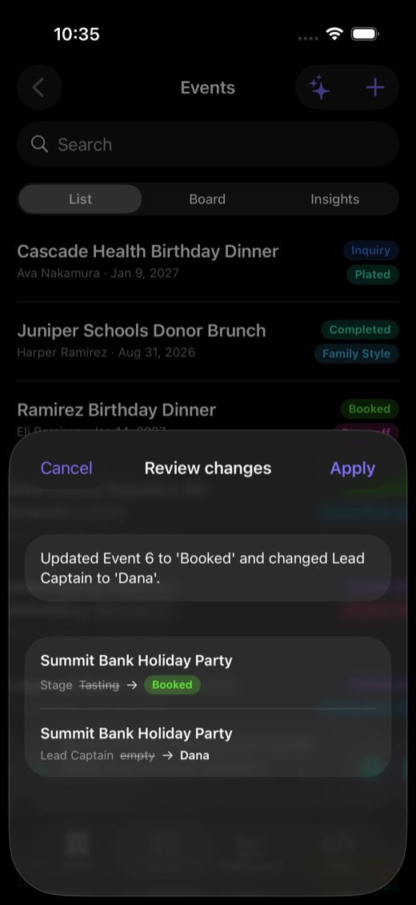
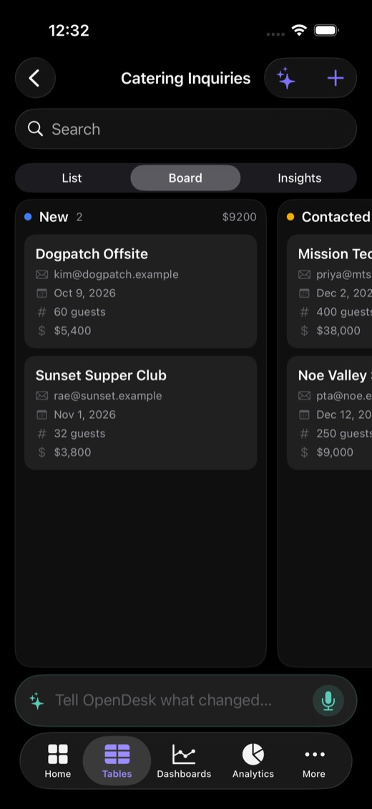
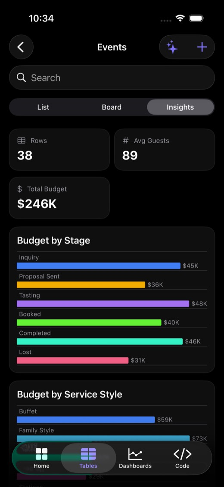
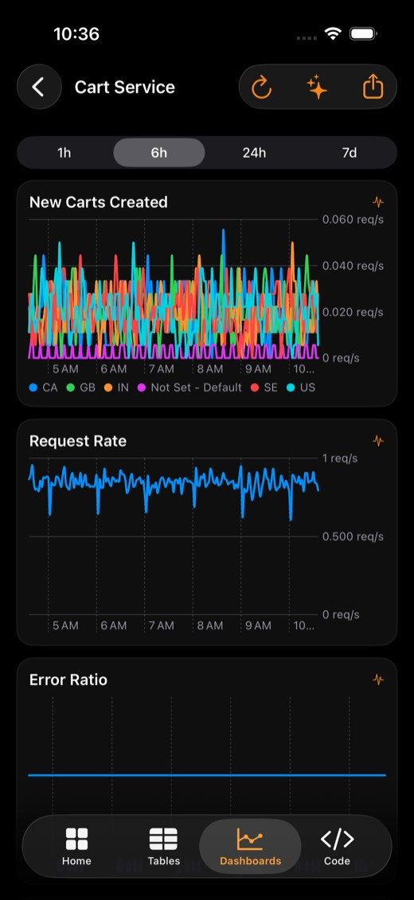
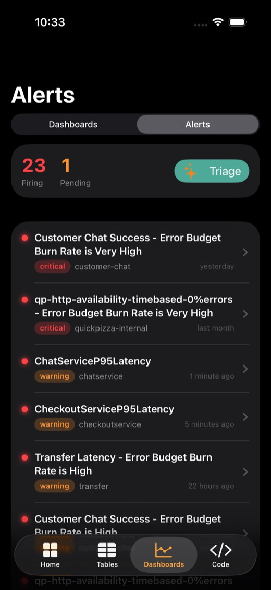
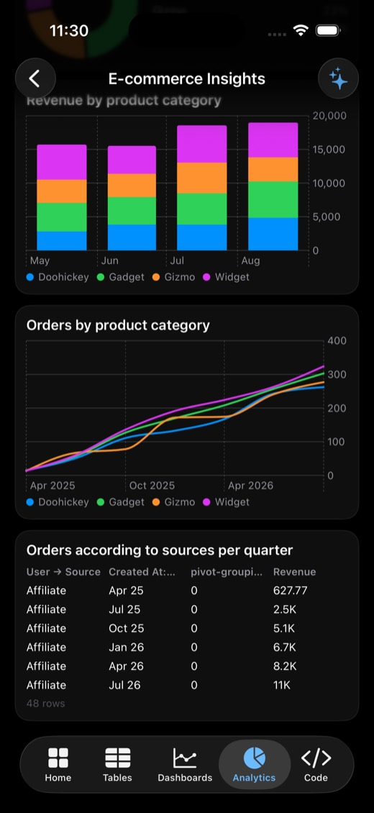
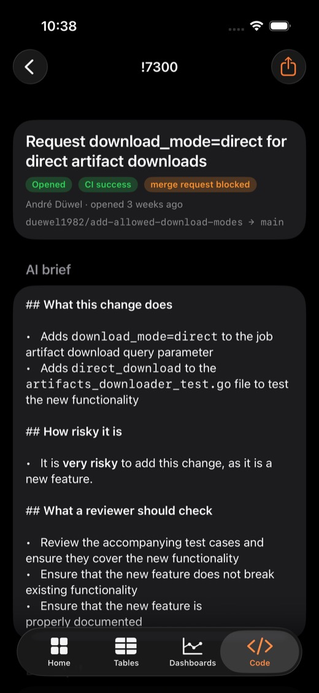
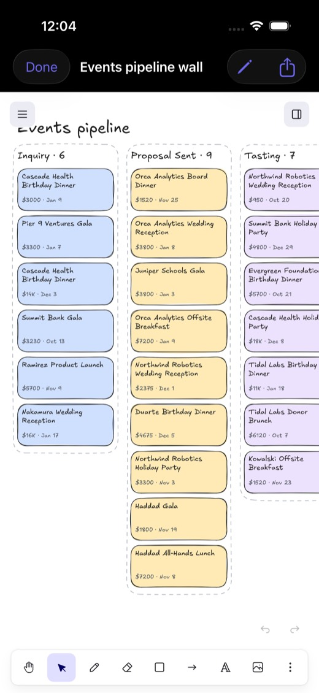

One native iPhone app for the self-hosted tools teams already run. Install it, point it at your data, and your whole team gets the same app. It talks straight to each tool's API: no fork of the tool, no server of ours, no migration. The AI runs on the phone.
Enterprise open source still lives in a desktop browser
These tools won on self-hosting, price and control. The people who depend on them aren't always at a desk, though: the caterer at a venue walkthrough, the on-call engineer at dinner, the lead approving a merge between meetings. The web UIs technically load on a phone. Nobody wants to use them there.
Tool
Stands in for
Official mobile app
What people do on a phone today
NocoDB
Airtable, a lightweight CRM
None
Pinch-zoom a spreadsheet grid
Supabase apps
Internal admin panels
Build your own
Open the dashboard's table editor, or ask an engineer
Grafana (OSS)
Datadog dashboards
None for dashboards
Squint at 24-column panel layouts
Metabase
Looker, Tableau
None
Desktop dashboards squeezed onto a phone
GitLab
GitHub
None
The desktop site in Safari
Excalidraw
Miro, FigJam
None
A browser tab that forgets your board
Day one
Install it, and it works with the data you already have
The hard problem isn't the charts. It's the first five minutes: getting a team's real data onto everyone's phone without an IT project. OpenDesk handles that inside the app.
ConnectYour NocoDB, or your Supabase appPaste a URL and a token, or sign in as a user of your own Supabase app.
ImportAirtable or a spreadsheetPaste an Airtable base link and NocoDB's own importer copies every table. Or pick a CSV from Files and the column types are detected for you.
TeamAdmins set it up onceCreate a team, publish the connections, and share a 6-letter code or QR. Members sign in and get the same app.
WorkEvery tab fills inBoards, charts, alerts and AI, on your real data, with your permissions.
What's built
Six tools, one app, all on live data


Tables · NocoDB
A CRM in your pocket, modeled on a real catering business
Any base: a list, a drag-and-drop board on any select field, and auto-built charts.
A typed editor with select chips, dates, star ratings, and tap-to-call or tap-to-email.
Tell it what changed. Hold the mic and say "Summit Bank tasting went great, book it, Dana captains." You get a diff to review, and tapping Apply writes it back.
Works offline from the last sync, and says so.


Tables · your Supabase app
Your Supabase app's data, with your security rules
Sign in as a user of your own app, not an admin. The phone never holds a service key.
Every read and write carries that user's token, so row-level security decides what each teammate sees. The demo table is scoped per team.
Postgres types map to the same UI: enums become board lanes, and money, dates and emails get proper editors.
Setup is one read-only SQL helper that lists the tables the signed-in user can already read.


Dashboards · Grafana
Charts redrawn natively, plus an on-call inbox
Each panel's query is replayed through Grafana's datasource API and drawn with Swift Charts you can scrub. Anything it can't replay falls back to a server-rendered image.
Alerts shows what's firing, critical first. Triage asks the AI what on-call should look at first.


Analytics · Metabase · Code · GitLab
BI you can read on a phone, and code review between meetings
Metabase dashboards and tabs, with every question redrawn natively: KPIs with trend, lines, stacked bars, pie, funnel, scatter and tables.
GitLab merge requests, issues, pipelines and diffs, plus a 30-run CI health strip. Summarize this change tells you what it does, how risky it is, and what to check.

Whiteboard · Excalidraw
Your data, drawn
Map my database turns every NocoDB base and table into a hand-drawn entity map.
Pipeline wall turns your deals into sticky notes, one lane per stage, ready for a planning meeting.
Full open-source Excalidraw for editing. Boards save on the phone and export as standard .excalidraw files.
Also on the phone: a home and lock screen widget, and Siri ("What's booked next in OpenDesk?").
Teams
Admins set it up once. Everyone gets the same app.
Admin
Creates the team and connects the tools
Publishes the connections to the team
Invites by 6-letter code, link or QR
Promotes, demotes and removes members. The last admin can't be removed.
Member
Signs in with an email link or password
Joins with the code, and every tab fills in on launch
Sees Supabase rows their account is allowed to see
Can leave the team at any time
Under the hood
Supabase Auth, Postgres, and row-level security on every table
Members can read the shared setup but not change it; strangers see nothing (tested)
Sessions stored in the iOS Keychain
How it works
A thin native client over APIs these tools already have
iPhone · OpenDesk
SwiftUI + Swift ChartsiOS 26
Apple Intelligence + Speechon device
WidgetKit · App Intentswidget · Siri
Claude (optional)bring your own key
→plain REST with each user's own credentials
Your existing, unmodified servers
NocoDBself-hosted or cloud
Your Supabase appRLS as the user
Grafanaany instance
Metabaseself-hosted
GitLab.com or self-managed
Excalidrawopen-source web app
The on-device model is small, so it gets three constraints: the app narrows the table to the few rows an instruction plausibly names, passes each select column's allowed values, and lists the existing names for short-vocabulary columns. A person reviews every write.
Why a phone app
Things a browser tab can't do
The web UIs of these tools already exist. What was missing is everything that only works when the app lives on your phone.
Built
Siri: "What's booked next in OpenDesk?"
Voice edits: hold the mic, say what changed, review, apply
Widgets: pipeline value and next events on the home and lock screen
Live notifications: a teammate moves a deal and your phone buzzes
Offline: keeps working at a venue with no signal
On-device AI: answers without your data leaving the phone
Next
Live Activities: an event-day countdown in the Dynamic Island
Interactive widgets: "Mark booked" or "Silence alert" without opening the app
Push when the app is closed: Supabase Edge Functions through Apple's push service
Shortcuts automations: arrive at a venue and today's event opens
Later
Camera: scan a business card into your CRM, photograph setups onto an event
Maps: travel time to load-in
Face ID: lock client data
Calendar and Apple Watch: booked events in your calendar, alerts on your wrist
Extend it
Your tool isn't here? Fork it and ask your coding agent.
OpenDesk is open source, and every tool is the same small pattern: a REST client plus a couple of screens. The repo ships an AGENTS.md that teaches a coding agent that pattern, so adding Twenty, Plane, Zammad, Baserow or your in-house tool is a conversation, not a project.
2Tell your agent what you useClaude Code, Cursor, anything that reads the repo.
3Build and installIt adds the client, screens, settings, a Home tile, team sync and AI context, then checks them in the simulator.
You, to your coding agent
Add an OpenDesk connector for Twenty CRM at https://crm.mycompany.com. Follow AGENTS.md.
For table-shaped data it's even shorter: implement one TableSource, and the list, board, charts, editor and voice edits all come for free. That's how the Supabase connector was built.
Demo script
Two minutes, on stage, on a real phone
1
Home: four tools, all green."Six open-source tools, none with a phone app. Now they're one app."
0:00
2
Tables → Events → Board. Drag a card, then hold the mic: "Summit Bank tasting went great, book it, Dana captains.""This model runs on the phone. The client list never left it."
0:15
3
Import: AirDrop a CSV and import it. Its columns and types come through."This is the day-one problem, solved in the app."
0:40
4
Team: show the QR. A friend scans it, signs in, and sees the same tables."The admin sets it up once, and everyone gets it, with row-level security."
1:00
5
Dashboards → Alerts → Triage, then Analytics."It's 2am, you're on call, and you have the answer before you find your laptop."
1:25
6
Whiteboard → Pipeline wall, then Siri: "What's firing in OpenDesk?""And if your tool isn't here, fork it and tell your agent."
1:45
Why it matters
Who it helps
Teams on open source
Day one works: connect, import, invite, and the whole team is on the same app.
Private by design: AI runs on the phone, tokens stay on the device or behind row-level security, and there's no relay in between.
Frontline work: caterers, field sales and on-call engineers get the tool where the work happens.
The projects themselves
A mobile client for free: it uses each project's public API as it is, with nothing to merge or maintain on their side.
Closes the gap self-hosters had against SaaS tools like Airtable, Datadog and GitHub, which is a good phone app.
A shared pattern: the clients can ship as Swift packages each project could adopt.
Next
Where it goes from here
Push alerts from Grafana, with silence from the lock screenSign in with AppleTwenty CRM, Plane and Zammad connectorsOffline edits that sync laterTestFlight, then the App Store